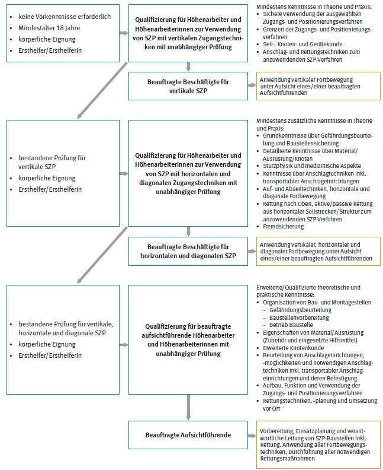

Höhenarbeiter und Höhenarbeiterinnen müssen körperlich und fachlich für diese Tätigkeiten geeignet sein.
Die körperliche Eignung gilt als erfüllt, wenn keine gesundheitlichen Bedenken auf Grundlage einer Eignungsuntersuchung bei Arbeiten mit Absturzgefahr bestehen.
Informationen zum Thema "Eignungsuntersuchungen" enthält die DGUV Information 250-010 "Eignungsuntersuchungen in der betrieblichen Praxis".
Das Mindestalter für Höhenarbeiter und Höhenarbeiterinnen beträgt 18 Jahre.
Höhenarbeiter und Höhenarbeiterinnen müssen zum Ersthelfer bzw. zur Ersthelferin nach § 26 DGUV Vorschrift 1 "Grundsätze der Prävention" durch eine ermächtigte Ausbildungsstelle gemäß DGUV Grundsatz 304-001 "Ermächtigung von Stellen für die Aus- und Fortbildung in der Ersten Hilfe" ausgebildet sein.
Arbeiten unter Verwendung von SZP werden meistens in exponierten Arbeitsumgebungen durchgeführt. Bei einem Unfall ist die Erste-Hilfe-Versorgung der verunfallten Person und eine unverzügliche Rettung notwendig.
Als fachlich geeignete Personen gelten z. B. Höhenarbeiter und Höhenarbeiterinnen, die eine Qualifizierung nach Abschnitt 5.5 absolviert und die Qualifizierung mit einer bestandenen Prüfung (siehe Abschnitt 5.7) erfolgreich abgeschlossen haben.
Die Qualifizierung erfolgt in 3 Stufen und sollte sich an vergleichbaren Arbeits- und Einsatzbedingungen orientieren. Dabei sind für die Zugangsrichtungen nach 3.2.1–3.2.3 entsprechende Mindestqualifikationen erforderlich, die im Übersichtsschema auf Seite 23 aufgeführt sind.
Betriebsanweisung
Unternehmerinnen und Unternehmer haben eine Betriebsanweisung zu erstellen, die alle erforderlichen Angaben für die sichere Benutzung der Ausrüstungen enthält. Dabei sind insbesondere die Schutzmaßnahmen entsprechend der Gefährdungsbeurteilung umzusetzen und das Rettungskonzept sowie das Verhalten bei der Benutzung der Ausrüstungen sind zu berücksichtigen. Die Betriebsanweisung sollte am Einsatzort zur Verfügung stehen.
Unterweisung
Höhenarbeiter und Höhenarbeiterinnen sind zu unterweisen. Dabei sind Verfahren zur Rettung mit zu behandeln. Im Rahmen der Unterweisung sind praktische Übungen erforderlich (siehe TRBS 2121 Teil 3, Abschnitt 4.4). Die Übungen sind unter vergleichbaren Arbeits- und Einsatzbedingungen und mit durchgehender Redundanz bei der Benutzung von PSAgA sicherzustellen. Die Unterweisung ist in regelmäßigen Abständen, anlassbezogen, jedoch mindestens alle 12 Monate durchzuführen und zu dokumentieren.
Die Unterweisung erfolgt auf der Grundlage der Gefährdungsbeurteilung. Der Unternehmer und die Unternehmerin sind für die Inhalte und die Durchführung verantwortlich (siehe auch DGUV Regel 100-001 "Grundsätze der Prävention"). Sollten diese nicht über die erforderlichen fachlichen Kenntnisse verfügen, können interne und/oder externe fachkundige Personen unterstützend hinzugezogen werden.
Die Prüfung muss durch Personen, die nicht an der Qualifizierung beteiligt waren, nach einer abgestimmten öffentlich einsehbaren Prüfungsordnung durchgeführt werden. Nach bestandener Prüfung erhält der Höhenarbeiter bzw. die Höhenarbeiterin eine Bescheinigung über die bestandene Prüfung.
Grundlegende Anforderungen an die schriftlichen und praktischen Prüfungen von Höhenarbeitern und Höhenarbeiterinnen sowie an die prüfenden Personen können dem DGUV Grundsatz 312-003 "Anforderungen an Prüfungen von Höhenarbeitern und Höhenarbeiterinnen" entnommen werden.
Beauftragte Personen im Zusammenhang mit SZP sind:
Beauftragte Beschäftigte
Beauftragte Beschäftigte müssen von dem Unternehmer, der Unternehmerin oder von einer weisungsbefugten vorgesetzten Person für Arbeiten mit SZP beauftragt werden (Muster einer Beauftragung siehe Anhang 3).
Es können auch betriebsfremde Personen als Beschäftigte auf Grund eines Vertrages beauftragt werden.
Beauftragte Aufsichtführende
Aufsichtführende müssen weisungsbefugt gegenüber den unterstellten beauftragten Beschäftigten sein und von dem Unternehmer, der Unternehmerin oder von einer weisungsbefugten vorgesetzten Person beauftragt werden (Muster einer Beauftragung siehe Anhang 4). Zusätzlich können ihnen Unternehmerpflichten übertragen werden (Muster einer Pflichtenübertragung siehe Anhang 5). Aufsichtführende müssen über ausreichende Kenntnisse für die sichere Durchführung von Arbeiten, zur Organisation von Bau- und Montagestellen und über die sichere Verwendung von SZP besitzen. Dies ist dann der Fall, wenn sie mit den durchzuführenden Arbeiten vertraut sind und die für die Sicherheit und Gesundheit bei der Aufgabenerfüllung zu beachtenden rechtlichen Vorgaben und die Maßnahmen, z. B. aus der Gefährdungsbeurteilung, kennen.
Umfassende Kenntnisse zur sicherheitsgerechten Organisation von Bau- und Montagestellen erlangen Höhenarbeiter und Höhenarbeiterinnen z. B. durch ihre nachgewiesene Qualifizierung zur Fachkraft für Arbeitssicherheit bzw. zum Sicherheits- und Gesundheitsschutzkoordinator nach RAB 30 "Geeigneter Koordinator" oder die erfolgreiche Teilnahme an einem Seminar "Aufsichtführende Person im Bauwesen nach DGUV Information 212-001" (siehe Anhang 1).
Es können auch betriebsfremde Personen als Aufsichtführende aufgrund eines Vertrags beauftragt werden.
Übersichtsschema der persönlichen Anforderungen an Höhenarbeiter und Höhenarbeiterinnen
